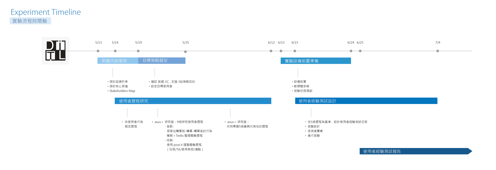
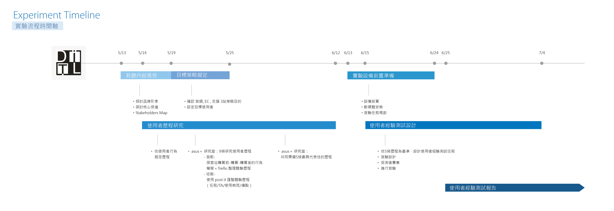

From the list: Give the list a title ✔ [第一階段實驗報告] 架構 Zen 育涓 張. added this on Jul 04, 2015 Completed Jan 17, 2017 by Hsien-Hui T. Due on Jul 15, 2015 Comments & Events Zen 育涓 張, 產品經理 請大家思考一下從開始到現在，我們經過多少的階段，才決定實驗的內容。 如:1. user observation2. CJM design3. CJM decision4. Experimental Tasks Generation5. Experimental Tasks Decision……. 可以中文，可以加說明>>>> Jul 04, 2015 at 6:55 AM Notified 1 person Zen 育涓 張, 產品經理 先放以下建議，歡迎大家補充「聆聽內部意見」 探討品牌形象 探討核心價值 Stakeholders Map 「目標策略擬定」 確認 官網, EC , 支援 3站策略目的 設定目標使用者 （從GA + CRM資料） 「使用者歷程研究」 a) 依使用者行為擬定歷程 b) asus＋ 研究室：9條研究使用者歷程 - 初期-（發散） 探索從購買前-購買-購買後的行為 簡報＋Trello 整理體驗歷程 (問題畫面截圖) - 中期- ( 收斂） 使用 post it 匯整體驗歷程（任務/TA/使用裝置/痛點） c) - 中期-( 再收斂） asus＋ 研究室：共同票選5條最具代表性的歷程 「使用者經驗測試設計」 依5條歷程為基準，設計使用者經驗測試任務 實驗設計 受測者募集 進行實驗 - 台科場 - ASUS 示範場 實驗架構 受測者輪廓 （4度象限） 實驗內容簡介？ 「使用者經驗測試報告」 ---- Jul 04, 2015 at 8:25 AM Notified 1 person Sallie 王紫綺, 打掃阿姨 稍微補上簡易版的時間軸，若有錯誤煩請提醒～ Jul 13, 2015 at 6:24 PM Notified 2 people Zen 育涓 張, 產品經理 ＠Sallian 王紫綺 ：excellent work！ (thumb up)是否能加上 6/13-24 "實驗設備前置準備" 這個時間軸呢 (內包含設備採買/軟硬體安裝/ 實驗任務規劃...)？時間軸可以over layer Jul 14, 2015 at 3:43 AM Notified 2 people Sallie 王紫綺, 打掃阿姨 修正版～  Experiment timeline-01.jpg 487 KB • Download Jul 19, 2015 at 1:51 PM Notified 2 people Yiyu 王亦瑀, 碩士生 Good job~ Jul 20, 2015 at 12:12 AM Notified 3 people Zen 育涓 張, 產品經理 對規劃UX PROJECT 有興趣的同學可以看, 內容不錯 http://www.smashingmagazine.com/wp-content/uploads/2013/01/chapter02.pdf Jul 22, 2015 at 3:11 AM Notified 3 people Zen 育涓 張, 產品經理 update 需要調整的地方：https://basecamp.com/1774175/projects/9217288/messages/51464999 Nov 24, 2015 at 4:17 AM Notified 3 people Hsien-Hui Tang 唐玄輝 completed this to-do. Jan 17, 2017 at 4:37 AM
Zen 育涓 張, 產品經理 請大家思考一下從開始到現在，我們經過多少的階段，才決定實驗的內容。 如:1. user observation2. CJM design3. CJM decision4. Experimental Tasks Generation5. Experimental Tasks Decision……. 可以中文，可以加說明>>>> Jul 04, 2015 at 6:55 AM Notified 1 person
Zen 育涓 張, 產品經理 先放以下建議，歡迎大家補充「聆聽內部意見」 探討品牌形象 探討核心價值 Stakeholders Map 「目標策略擬定」 確認 官網, EC , 支援 3站策略目的 設定目標使用者 （從GA + CRM資料） 「使用者歷程研究」 a) 依使用者行為擬定歷程 b) asus＋ 研究室：9條研究使用者歷程 - 初期-（發散） 探索從購買前-購買-購買後的行為 簡報＋Trello 整理體驗歷程 (問題畫面截圖) - 中期- ( 收斂） 使用 post it 匯整體驗歷程（任務/TA/使用裝置/痛點） c) - 中期-( 再收斂） asus＋ 研究室：共同票選5條最具代表性的歷程 「使用者經驗測試設計」 依5條歷程為基準，設計使用者經驗測試任務 實驗設計 受測者募集 進行實驗 - 台科場 - ASUS 示範場 實驗架構 受測者輪廓 （4度象限） 實驗內容簡介？ 「使用者經驗測試報告」 ---- Jul 04, 2015 at 8:25 AM Notified 1 person
Zen 育涓 張, 產品經理 ＠Sallian 王紫綺 ：excellent work！ (thumb up)是否能加上 6/13-24 "實驗設備前置準備" 這個時間軸呢 (內包含設備採買/軟硬體安裝/ 實驗任務規劃...)？時間軸可以over layer Jul 14, 2015 at 3:43 AM Notified 2 people
Sallie 王紫綺, 打掃阿姨 修正版～  Experiment timeline-01.jpg 487 KB • Download Jul 19, 2015 at 1:51 PM Notified 2 people
Zen 育涓 張, 產品經理 對規劃UX PROJECT 有興趣的同學可以看, 內容不錯 http://www.smashingmagazine.com/wp-content/uploads/2013/01/chapter02.pdf Jul 22, 2015 at 3:11 AM Notified 3 people
Zen 育涓 張, 產品經理 update 需要調整的地方：https://basecamp.com/1774175/projects/9217288/messages/51464999 Nov 24, 2015 at 4:17 AM Notified 3 people
如:
1. user observation
2. CJM design
3. CJM decision
4. Experimental Tasks Generation
5. Experimental Tasks Decision……. 可以中文，可以加說明>>>>
- 探討品牌形象
- 探討核心價值
- Stakeholders Map
「目標策略擬定」- 確認 官網, EC , 支援 3站策略目的
- 設定目標使用者 （從GA + CRM資料）
「使用者歷程研究」- 實驗架構
- 受測者輪廓 （4度象限）
- 實驗內容簡介？
「使用者經驗測試報告」excellent work！ (thumb up)
是否能加上 6/13-24 "實驗設備前置準備" 這個時間軸呢 (內包含設備採買/軟硬體安裝/ 實驗任務規劃...)？時間軸可以over layer
https://basecamp.com/1774175/projects/9217288/messages/51464999